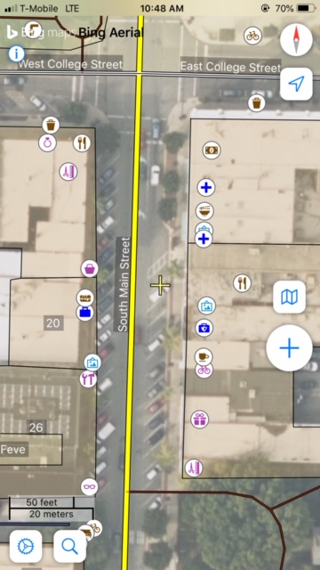
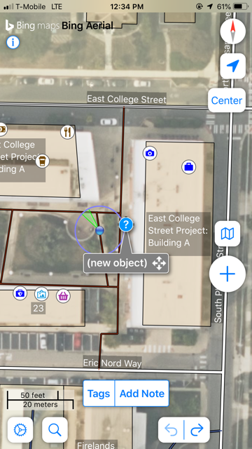
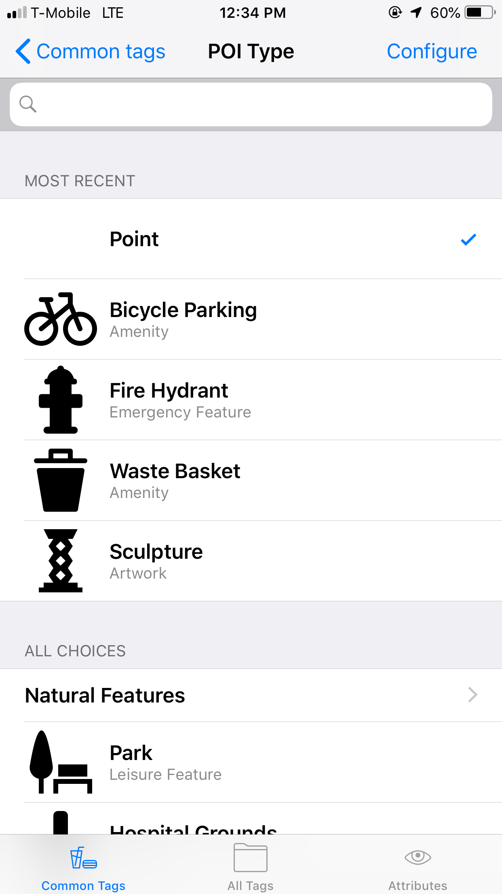
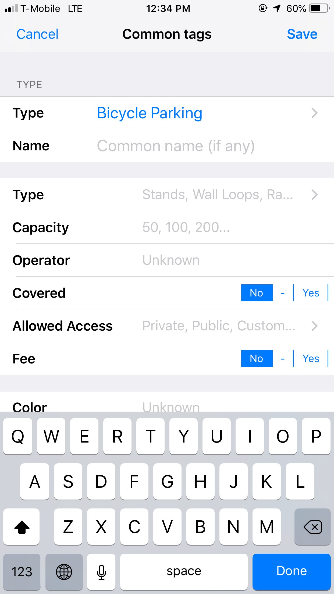
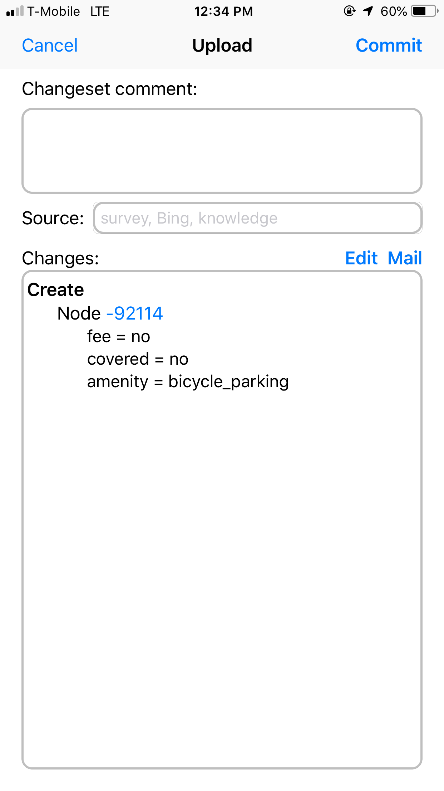

I was a bit intimidated to contribute to OSM and it took me time to do it. I needed to move to another country, get a correct smartphone (I was for a long time a Nokia 3310 user) and have some baby to move around in a stroller to decide myself! If you were like me, hesitating, you should not and I will try to explain why and how you can contribute.
A very quick introduction to OpenStreetMap!
OSM stand for OpenStreetMap a project of plenty of communities to provide a map (and a database) of the world. Unlike other projects (Google map, Apple map or the one from ESRI)1 this project is driven by contributors: everyone can contribute to the democracy of the project, completing the map and have discussion on the categories to map (“folksonomy”).
Why should I contribute?
Everyone can have their own reasons. Here are mines:
I use the data so it is normal to contribute back! I am old enough to have the need to write a letter to my country’s national cartographic agency to get some data for my research. It took time and a lot of papers. It is now better (probably thanks to OpenStreetMap and Open Data activists) but we face the same problem with private company map (albeit it is easier: they just ask you your credit card). OpenStreetMap data is great even if you need to work, a bit, for it. This data also brings interesting questions and challenges.
OpenStreetMap use another data model and as a GIS professional you should be familiar with it.
Mapping is fun! Yes, you can go on a walk and see the world differently, pay a bit more attention to all the objects we are depending on and what they tell us about us.
Go Map!!
They are plenty of ways to contribute to OSM. Of course you can map but you can also contribute to the wiki or help with codes and this is not exhaustive.
On the mapping side, you can use a smartphone or mapping in front of your computer (and plenty of options are also available here). I will focus on using a smartphone and an IOS mostly because I like to walk or bike. Oh yes, to contribute you need an OSM account (just go to the website and register).
Disclaimer: I have an old smartphone (an iPhone 6) and I was not the first user. Go Map works perfectly fine on it but you should have a good enough battery.
Go Map!! is on the App Store, once you have downloaded it you will need to provide it your OSM account.
Go Map is a fairly complete editor but you do not need to use all of its functionalities and you will learn as you practice with it.
Start easy: do some POI!
POI: stand for Point Of Interest, in OSM jargon it is a “node”, basically a point with some “tags” (OSM works with a key:value system). Why should I start with it?
First, I find it is easy on smartphones to only edit or add points. You can, of course, draw roads (“way”) and buildings (“closed way”) but it requires more knowledge and I find this is easier to do with other OSM editors (iD or JOSM).
Second, POI use a simpler data model: you just need to add a point and pick at least one tag.
Third, OSM need POI. POI can be an address, a shop, a bicycle parking, a waste basket, etc.
This is what Go Map!! look like, here with already plenty of POI:

If you use click on the blue arrow on top of the right corner, the screen will zoom on your position (yes you need to allow location on your smartphone). You can “unclick” it if needed.
Do you see the yellow star at the center of your screen? If you press the blue big plus (top right side) it will add a node (new_object) and tag/add note buttons will appear:

You can then pick a tag and add it. A new window will be available with some options to help you put the correct tag and information. To find the tag you can use the search bar (it helps having checked the wiki to find the correct tag before) or pick the few last tag you already have used (Here it was a bicycle parking).

Then you are sent to a new window with other common tags related to the POI you are adding (or not if you have no idea):

Here the parking is not covered and does not have a fee.
Finally, you can commit using a small cloud button on in the bottom right. You will have a window that reviews the change (here adding a note with few key:value) you can also a changeset comment sometimes useful for other mapper.

That is it you have contributed to OSM!
TL:DR!
1 - Download Go Map!
2 - Create an OSM account
3 - Walk and find an easy POI that you can add
4 - While you add it sees what is in the map and what is not
5 - Read the wiki/check on how other added other things around you
6 - Go back to 3
Remember OSM is a collective project always moving it could not be “perfect” or not how you think it should be but to improve it you can discuss it with others. This is not an option with other proprietary map.